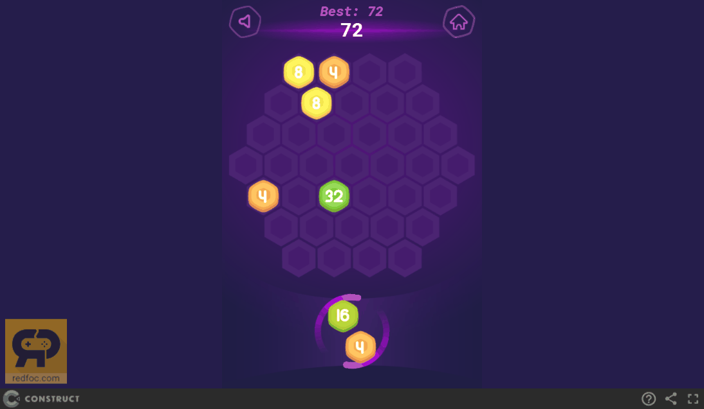
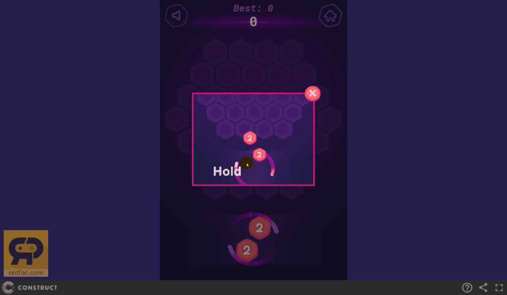
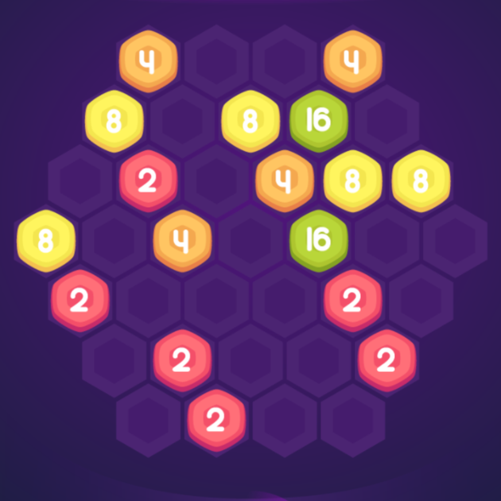
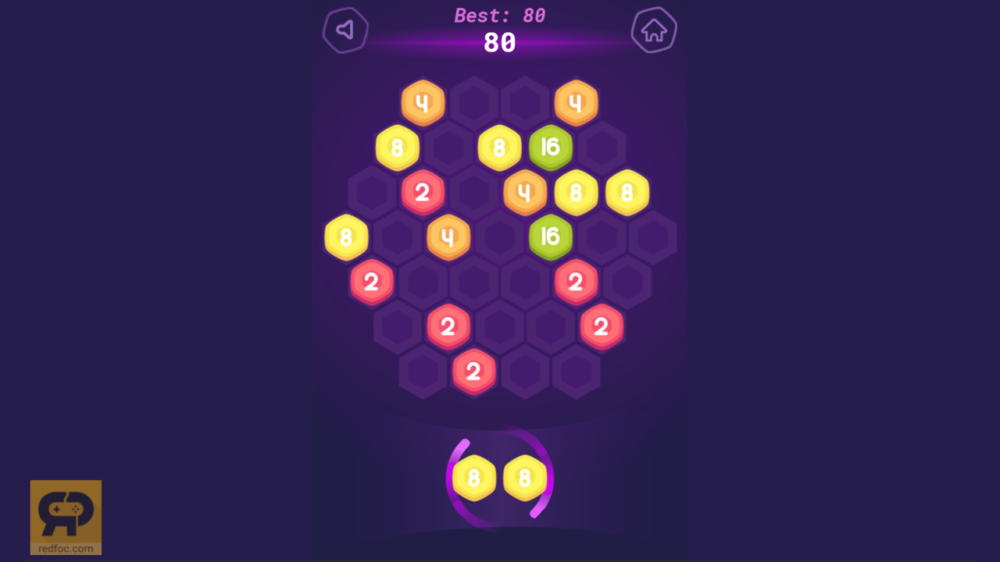
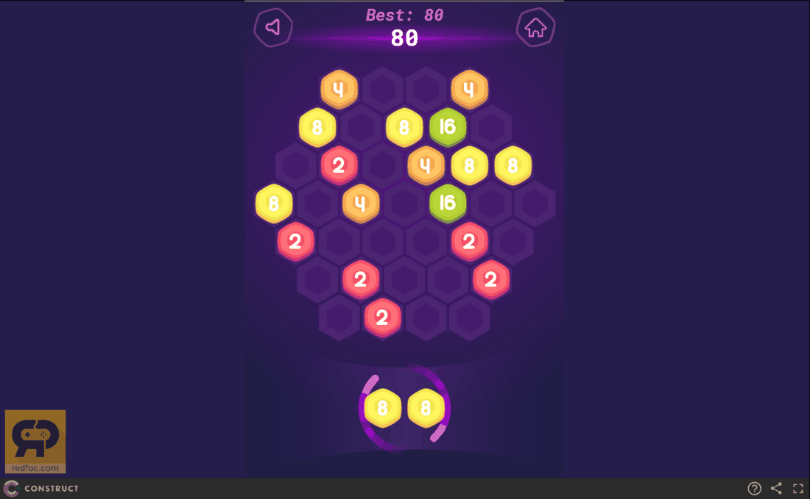

Test summary
We played Hexa Merge, a game Spicy Games listed before, on the maker's public build in real Chrome and Edge on a Windows desktop: load time, controls, merges and score, game over and restart three times, tab switch, reload, closing the browser, and where the score is stored. The phone columns are kept for our team's pass on a real Android phone and iPhone.
Recommendation
Not ready: a crash, blocked progress or restart, a lost required score, unusable required controls, or missing required evidence. Ready after minor fixes: plays well, named small fixes first. Ready: all required checks pass and blockers are retested. You keep the final say.
Top findings
Coverage by device
| Check | Chrome | Edge | Android Chrome | iPhone Safari |
|---|---|---|---|---|
| Loads (median seconds to START) | Pass5.4 s | Pass5.6 s | Not tested | Not tested |
| Buttons respond | Pass | Pass | Not tested | Not tested |
| Normal drag places a piece | Pass | Pass | Not tested | Not tested |
| Slow drag picks the piece up | Fail | Fail | Not tested | Not tested |
| Merges and score rise | Pass | Pass | Not tested | Not tested |
| Game over panel | Pass | Pass | Not tested | Not tested |
| Restart three times | Pass | Pass | Not tested | Not tested |
| Home button | Pass | Pass | Not tested | Not tested |
| Switch away and back: state | Not tested | Not tested | Not tested | Not tested |
| Switch away and back: input | Not tested | Not tested | Not tested | Not tested |
| Switch away and back: sound | Not tested | Not tested | Not tested | Not tested |
| Reload: playable again | Pass | Pass | Not tested | Not tested |
| Best score after reload | Pass | Pass | Not tested | Not tested |
| Best score after closing the browser | Pass | Pass | Not tested | Not tested |
| Private window starts clean | Pass | Pass | Not tested | Not tested |
| Text readable, touch targets | N/A | N/A | Not tested | Not tested |
| Portrait and landscape | N/A | N/A | Not tested | Not tested |
| Drag does not scroll the page | N/A | N/A | Not tested | Not tested |
| Fullscreen | N/A | N/A | Not tested | Not tested |
On a computer, hover a cell for the detail; on a phone, swipe the table sideways to see the iPhone column. Phone cells stay Not tested until our team plays the game on a real Android phone and iPhone; nothing on this page was emulated. Firefox is not installed on the test PC, so it was not tested.
How it was tested
- Real installed Chrome 157.0.8103.39 and Edge 157.0.4341.42 on a Windows 11 desktop PC with a mouse, each run by a test script (Playwright) in a fresh browser profile. Nothing was emulated.
- Every check saved a structured result as it ran. Screenshots exist for buttons, normal drag, merges and score, slow drag, reload, game over, restart and the best score after closing the browser, plus a BUG-01 video per browser; load time, the private window and the other score checks have structured results only. A check whose listed evidence file is missing shows Not tested.
- Load time: three fresh loads per browser with nothing cached; the median is shown.
- Tab switch: Not tested. Our test tool keeps the page counted as visible while another tab is in front, so the game never got the switch-away signal. We did not mark it Pass.
- Edge note: the first Edge session stopped taking our automated input after about 25 minutes; the cause of that stall is unconfirmed. A fresh Edge session with the same profile ran game over and restart 3 of 3 with no stall, and that rerun is the Edge result shown.
- Play time: Chrome 9.7 min; Edge 31.4 min in the first session (just over our 30 minute cap, which is checked between steps) plus 7.1 min in the rerun.
Bug reports
One real defect, reproduced and re-run from the written steps alone. Things that are not defects are listed separately, so the bug list stays clean.
BUG-01: A slow drag does not pick up the piece Medium 3 of 3 in each browser
Steps from a fresh load
- In a fresh browser profile, open https://www.construct.net/en/free-online-games/hexa-merge-10288/play (tested on 11 November 2026) and wait for the START button.
- Click START, then Play, then close the tutorial with the X.
- Press and hold the mouse button on the piece in the round tray.
- Move it slowly to an empty hex, taking about one second.
- Release the button.
- Repeat steps 3 to 5 quickly, in about a quarter of a second.
Likely cause, from the game's own event data read in the browser: a piece is picked up only while the pointer is on it AND moving faster than 200; the Construct manual says "Touch speed is measured in canvas pixels per second". A slow, careful drag stays under that speed. In our timing runs, 0 of 10 drags lasting 0.7 s or 1 s picked a piece up. Suggested fix: pick the piece up on press, or after a small distance, not on speed. Who it hurts: careful, younger and older players, and touchpad users. Phones are checked in the team phone pass.

Usability and listing notes Not bugs
- The tutorial only shows the drag. On first Play a short animation shows a piece being held and dragged onto the board, with the word "Hold" drawn into it (screenshot below). In our runs it did not explain that three or more equal numbers merge, or when the game ends. A one-line hint would help first-time players. It also shows again after every reload.
- The maker's logo is inside the game. The public build shows a "redfoc.com" logo in the corner of the title screen and at times during play, and loads a script from cdn.redfoc.com. For your copy, check that the licensed build does not show the maker's demo logo before publishing.
- The listing instructions need editing. The construct.net text reads "Drag blocks (bottom), then drop it into empty tile/area." It has grammar slips, one wording for every device, and does not explain merging. Edited copy is on the Publish pack tab.
- Icon-only buttons. Sound, home, play and restart are icons without labels. They were clear in play; the team's phone pass checks they are easy to hit with a thumb.

Not the game
The construct.net arcade page around the game (site header, category list, the "Create your own games" banner, and the Construct bar with help, share and fullscreen) was not judged. It is not part of the game and would not ship with your copy.
Score and storage checks
Hexa Merge keeps a best score and the board in progress in the browser. We wrote a save rule first, then tested it in Chrome and Edge and recorded exactly what is stored and where.
Save rule tested Our assumption
Save rule (our assumption for this public build): the best score survives a reload and closing the browser in the same browser profile. A private window and a second browser are expected to start clean; that is how browsers work, not a game bug.
| Check | Chrome | Edge | What we saw |
|---|---|---|---|
| Clean profile, first load | Pass | Pass | First load in this clean profile: no saved best score. When the other browser is tested afterwards, it also starts with no score: a second browser never shares the score. Expected, not a bug. |
| Reload, same profile | Pass | Pass | Best score before reload 88, after reload 88. Edge: Best score before reload 66, after reload 66. |
| Board in progress after reload | Pass | Pass | Reload: the game loaded again and was playable (screens: title > menu > tutorial > board). The board in progress was restored as it was; score before 88, after 88. Edge: Reload: the game loaded again and was playable (screens: title > menu > tutorial > board). The board in progress was restored as it was; score before 66, after 66. |
| Close the whole browser, reopen | Pass | Pass | Closed the whole browser and opened it again with the same profile: best score 292 before, 292 after. Edge: Closed the whole browser and opened it again with the same profile: best score 250 before, 250 after. |
| Private window | Pass | Pass | A fresh private-style context opened with no saved best score (no redfoc_hexa_merge key). This is expected browser behaviour: private windows start empty and keep nothing after closing. Not a game bug. |
| Same game file opened at its own address | N/A | N/A | Observation: the same game file opened directly at construct-arcade.com (not inside the construct.net page) in the same profile showed best 292, the same as inside the arcade page: in this browser the save follows the game file address, not the page around it. Edge: Observation: the same game file opened directly at construct-arcade.com (not inside the construct.net page) in the same profile showed best 250, the same as inside the arcade page: in this browser the save follows the game file address, not the page around it. |
Where the game keeps its data
- Best score: IndexedDB database c3-localstorage-2m2oqhlgof90t, store keyvaluepairs, key redfoc_hexa_merge, saved as a plain number (292 in Chrome and 250 in Edge at the end of our runs).
- Board in progress: key redfoc_hexa_merge_session in the same store holds the board and the current score. This is why a reload brings the board back.
- Whose storage it is: the game frame's address, https://construct-arcade.com, not the construct.net page around it. On your site the save will belong to the address that serves the game file.
- localStorage: empty. The keys start with the maker's name (redfoc_); a clash with another game on the same address was not tested (see the next card).
Not tested here, and why
- Game A, then game B, then game A on one address: needs two of your games on the same address; only one game was in scope. We did not edit storage by hand to fake a clash.
- Account, leaderboard and score requests to a server: this build has no login or leaderboard, and the network traffic of score saves was not reviewed in this sample.
- Safari's seven-day rule: needs Safari on an iPhone or Mac over seven days; not part of this desktop pass.
- Firefox: not installed on the test PC.
Publish pack
What we would hand over with this game for listing. The thumbnail was captured in game, in real Chrome, during normal play; the crops are only scaled down, never up, and the original capture is kept.
Thumbnail Proposed sample crops; your tile sizes to be confirmed



Category
Puzzle
A number-merging board puzzle in the style of 2048: you place pieces on a hexagon board and merge three or more equal numbers. No timer and no action.
Tags: merge numbers hexagon 2048 puzzle
English title, description and instructions (edited)
Edits: the original listing text has grammar slips, one wording for all devices and no word on merging. The rules in the new copy (three or more merge, the game ends when no piece fits) were confirmed in play on 11 November 2026. The swap line comes from the game's own tap handler and the maker's earlier site text; it is awaiting verification in play.
Facts on this page come from playing the public build in real installed Chrome and Edge on 11 November 2026, the game's own saved data and event files read in the browser, and the Construct manual. Your own copy, your new site and your backend were not accessed.